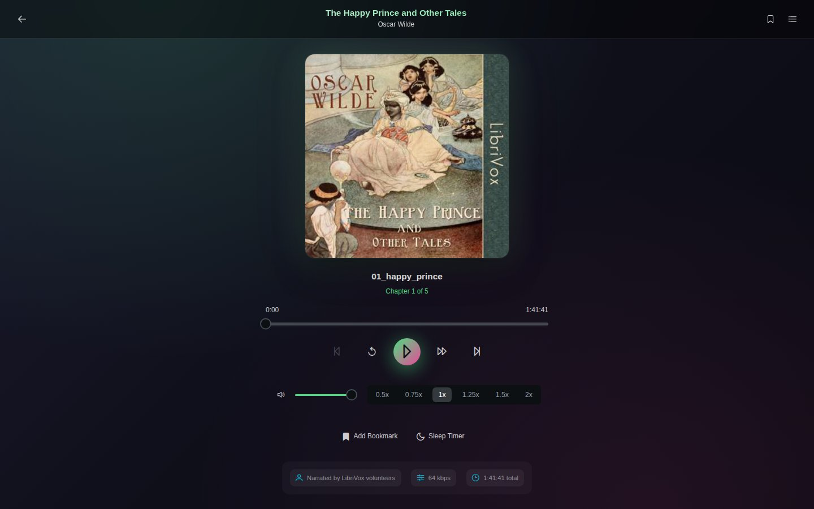
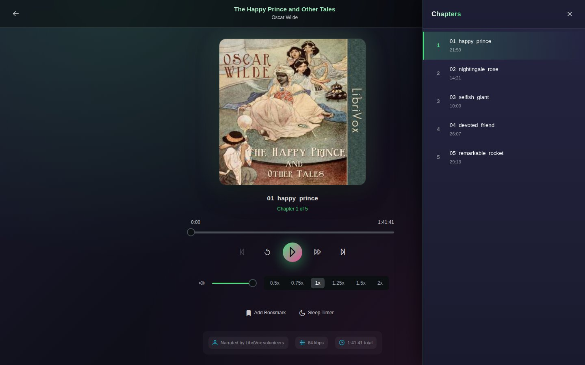
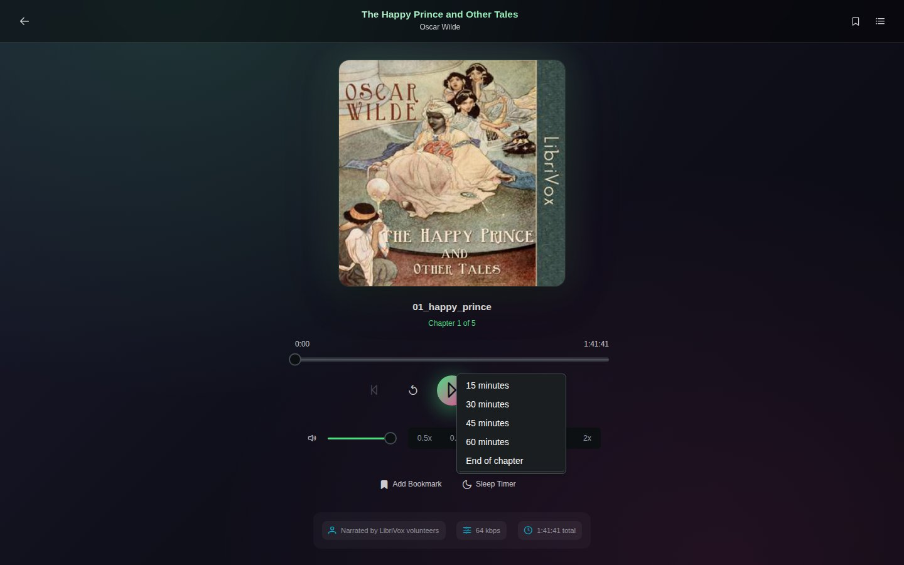

Audiobook player
Audiobooks play in the browser, from single M4B, M4A, MP3 or Opus files or from a folder of tracks. Trove remembers where you stopped, and the dashboard's Continue Listening row brings you back.

Playing
Open the book and click Play. Under the cover are the title of the current chapter or track, a position bar you can drag, and the controls:
| Control | What it does |
|---|---|
| ⏮ / ⏭ | Previous or next chapter (for a single file) or track (for a folder) |
| ↺ / ⏩ | Back 30 seconds, forward 30 seconds |
| ▶ | Play or pause |
| Volume | The slider on the left |
| Speed | 0.5×, 0.75×, 1×, 1.25×, 1.5× or 2× |
The strip at the bottom shows the narrator, bitrate and total length when the file says so. Your browser's and phone's own media controls (lock screen, headphones, keyboard media keys) work too.
Chapters and tracks
The list button at the top right opens the chapters of a single-file audiobook, or the tracks of a folder audiobook. Click one to jump to it.

Chapter names come from the file. A folder audiobook's tracks are listed in file-name order, so number the files (01 - …, 02 - …) to keep them straight; see Folder structure.
Bookmarks
Add Bookmark marks the current position. The bookmark button at the top right lists your bookmarks; click one to jump there, or delete it. Bookmarks also appear in the Notebook.
Sleep timer
Sleep Timer stops playback after 15, 30, 45 or 60 minutes, or at the end of the current chapter. While it runs, the button counts down; choose Cancel timer to stop it.

Progress
Your position is saved as you listen and whenever you pause, so you can carry on from another device. Listening time is recorded as reading sessions, shown on the book's page and in your reading statistics.